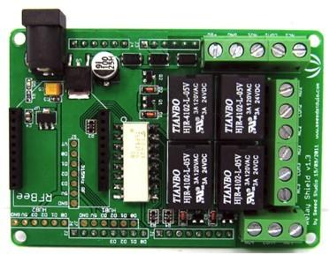
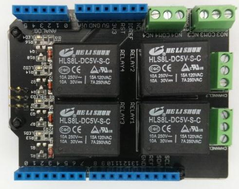

The Relay Shield is an Arduino compatible smart module with 4 mechanical relays providing an easy way to control high voltage. The max switching power is 35VDC 70W for each channel. It can be directly controlled by Arduino/Seeeduino through digital IO.
|  | 
|
 |
Here lists the comparison between various versions of Relay Shield:
| Parameter | Relay Shield V1.0 | Relay Shield V2.0 | Relay Shield V3.0 |
|---|---|---|---|
| Working Voltage | +7V ~+12V | +5V | +5V |
| Power | Extern power supply | 5V Pin of Arduino/Seeeduino | 5V Pin of Arduino/Seeeduino |
| Switching Current(Max) | 2A | 8A | 8A |
| XBee Interface | Yes | No | No |
| Remote control | Yes | No | No |
| Standard Shield | No | Yes | Yes |
| Working status indicators for each relay | No | Yes | Yes |